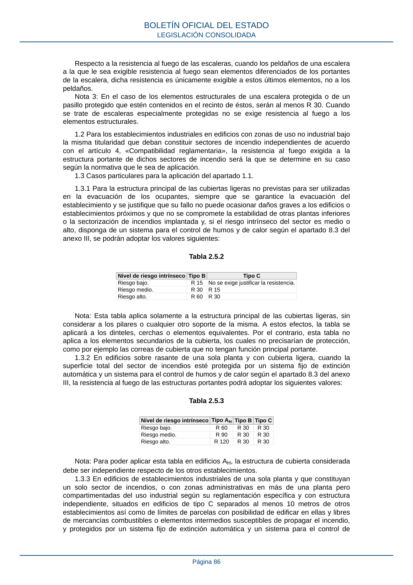

RSCIEI · edición 2025-04-10 · capa asociada
Documento RSCIEI-asociada · SHA-256 del PDF 85aa0af25d51e5b58d8975a4eefbf76d3f57a8933445cfe814ae9c4818a2e3e7
Copia fiel del PDF fuente · Fuente oficial
Ficha de la disposición en la fuente oficial
Texto extraído y reorganizado: Basado en datos de la Agencia Estatal Boletín Oficial del Estado. PDF reproducido: Fuente de los datos: Agencia Estatal Boletín Oficial del Estado.
Formatos: JSON del segmento · Markdown
anexo III, se podrán adoptar los valores siguientes: Tabla 2.5.2 Nivel de riesgo intrínsecoTipo B Tipo C Riesgo bajo. R 15 No se exige justificar la resistencia. Riesgo medio. R 30 R 15 Riesgo alto. R 60 R 30 Nota: Esta tabla aplica solamente a la estructura principal de las cubiertas ligeras, sin considerar a los pilares o cualquier otro soporte de la misma. A estos efectos, la tabla se aplicará a los dinteles, cerchas o elementos equivalentes. Por el contrario, esta tabla no aplica a los elementos secundarios de la cubierta, los cuales no precisarían de protección, como por ejemplo las correas de cubierta que no tengan función principal portante. 1.3.2 En edificios sobre rasante de una sola planta y con cubierta ligera, cuando la superficie total del sector de incendios esté protegida por un sistema fijo de extinción automática y un sistema para el control de humos y de calor según el apartado 8.3 del anexo III, la resistencia al fuego de las estructuras portantes podrá adoptar los siguientes valores: Tabla 2.5.3 Nivel de riesgo intrínsecoTipo AHTipo BTipo C Riesgo bajo. R 60 R 30 R 30 Riesgo medio. R 90 R 30 R 30 Riesgo alto. R 120 R 30 R 30 Nota: Para poder aplicar esta tabla en edificios AH, la estructura de cubierta considerada debe ser independiente respecto de los otros establecimientos. 1.3.3 En edificios de establecimientos industriales de una sola planta y que constituyan un solo sector de incendios, o con zonas administrativas en más de una planta pero compartimentadas del uso industrial según su reglamentación específica y con estructura independiente, situados en edificios de tipo C separados al menos 10 metros de otros establecimientos así como de límites de parcelas con posibilidad de edificar en ellas y libres de mercancías combustibles o elementos intermedios susceptibles de propagar el incendio, y protegidos por un sistema fijo de extinción automática y un sistema para el control de BOLETÍN OFICIAL DEL ESTADO LEGISLACIÓN CONSOLIDADA Página 86
